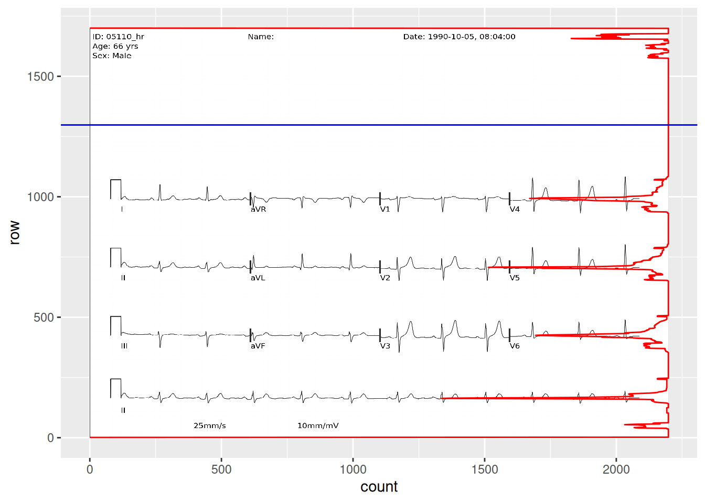
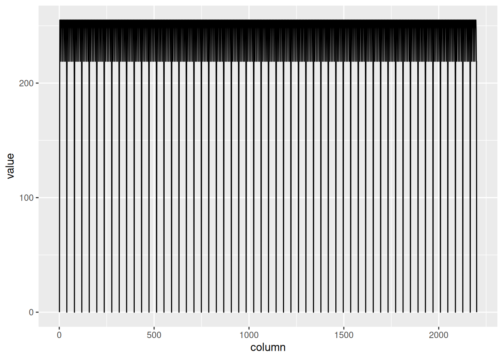

I occasionally peruse available Kaggle competitions to see if there’s something fun to explore. This week, I came across this competition around converting EKG images into time series data. This piqued my interest because context can give such a big advantage over a pure ML approach. I’m going to walk through some basics of EKGs and hopefully we can extract some time series data without using any ML. That said, there is obviously a place for computer vision to do a lot of the work that I’m going to write more deterministic code for.
Before even looking at the actual signal, I’m interested in the red lines. Here’s a good explanation from Wikipedia. We can use the red line to build our coordinate system and from there, identify time and voltage values for the actual ekg signal.
I was surprised to see that we pretty much eliminated the grid here. This is still helpful though. Lets find a line with no EKG signal and no writing.
## convert to a matrixred_matrix <-as.integer(image_data(red))## find the number of pixels in each row with >200 valuehigh_value_rows <- red_matrix[,,1] |>apply(1, function(x) sum(x >200))high_value_rows <-tibble(count = high_value_rows) |>mutate(row =max(row_number()) -row_number() +1)empty_row_graph <-ggplot(high_value_rows, aes(x = row, y = count)) +coord_flip() +annotation_raster(red, xmin =0, xmax =1700, ymin =0, ymax =2200) +geom_line(color ="red") +geom_vline(aes(xintercept =1298), color ="blue")empty_row_graph

From the plot overlay, we can now see where there is writing and signal and where there is nothing but grid. Let’s now find a horizontal line without signal. I added a blue line that I’ll use to measure my grid. I’ll use the blue channel for this one.
Figure 2: Blue channel of ECG grid
blue_matrix <-as.integer(image_data(blue))horizontal_lines <- blue_matrix[502, , 1]## create a 3 column tibble with one column being the row number, the second column number, and the third column the valuehorizontal_lines <-tibble(column =seq(1, 2200),row =502,value = horizontal_lines)grid_plot <-ggplot(horizontal_lines, aes(x = column, y = value)) +geom_line()grid_plot

let’s zoom in and add the blue channel underneath.
The width of one big box is 39.4 pixels, which is equal to 200ms horizontally and 0.5mV vertically. Now let’s start tracing the signal itself.
Finding the signals
For this, we’re going to go back to the red channel. We’ll use our previous analysis that we used to find rows that have no signal, and instead use it to find the rows that have our signals. There are 4 rows of signals. The first three have all 12 leads, and the bottom row is lead II going all the way across to be used for rate and rhythm.
Now we’ve found the parts of the image that have signal and we also identified the zero voltage line. Technically, zero voltage is defined as the voltage between the T wave and the following P wave, but this approximation of counting dark pixels in each row and identifying a local maximum seems to work incredibly well. You’ll notice that the bands are labeled 5-8 because I started at the top and each section of text or signal created a band. This will not always be consistent. In lead II, you can see that the label is a new band, but in the other rows, the label is included in the band. Depending on the patient, the device, and the strength of the lead connection, the amplitude of the signal can vary and overlap with the label (sometimes even overlap with the signal above or below).
Tracing the signal
Let’s see if we can trace the signal on the red channel. The naive approach is to find the location of the min value in each column, and when there is more than one, take the highest location. I’ll also block out where the letters are so we can avoid those.
Now that we have our signal traced, converting it to a time series is easy. We just need to subtract the zero voltage and convert the x and y coordinates into ms and mV, respectively.
Now our EKG is 10 seconds long. We could probably take it further by breaking it down into each individual lead and trimming the false signal along the edges, but I think we’ve demonstrated how we can get this done with image processing and some basic knowledge about EKGs.
That said, there is definitely opportunity to improve this process with machine learning. We used a pretty standard PNG. The competition also includes paper scans, pictures taken with cell phones, black and white scans, etc. A robust process would be to use machine learning to get the EKG oriented correctly, colorize it into something consistent, and mark regions where the signal is and isn’t (e.g. making sure the aVR label doesn’t get interpreted as signal).


{kind=link}